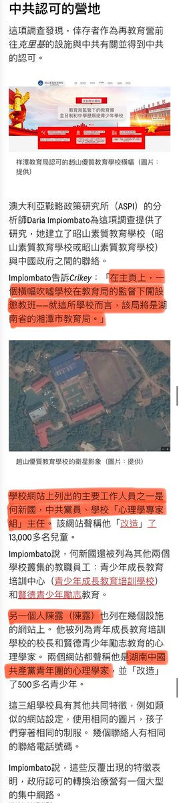
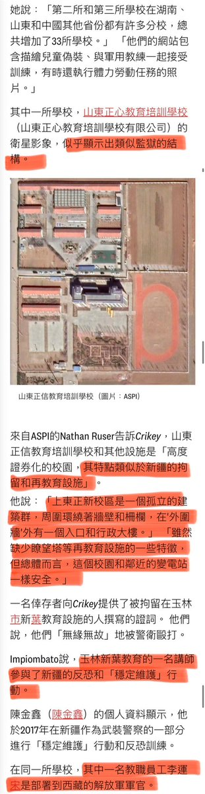

没吹嘘确实是在当地教育局手下建成的
团队成员早些年跟这个岳塘的学校打过招呼
17年的时候翻墙进去到学校里能看到桌子上放满了带着血的细竹签
没有实证据
怀疑是用来扎进孩子们的指甲缝里行刑的工具
但我认为这只能归于当地政府的问题没法归于中共
实际上在我跟官方得很多次合作发现他们比我想解决问题

团队成员早些年跟这个岳塘的学校打过招呼
17年的时候翻墙进去到学校里能看到桌子上放满了带着血的细竹签
没有实证据
怀疑是用来扎进孩子们的指甲缝里行刑的工具
但我认为这只能归于当地政府的问题没法归于中共
实际上在我跟官方得很多次合作发现他们比我想解决问题


2023年，調查記者 @tomcanetti 在一篇調查報導中揭示了「網癮學校」，包括針對特定群體的 #扭轉治療 機構，其背後有著 #中共當局 的直接支持和千絲萬縷的連繫。
例如，一些「學校」在教育部直接監督下開設，在它們的官網，可以找到其核心員工乃至心理專家是中共黨員。
這其中最顯著的例子是這名叫 https://t.co/pKgEyZ8QUT https://t.co/5QgghYVi9z
例如，一些「學校」在教育部直接監督下開設，在它們的官網，可以找到其核心員工乃至心理專家是中共黨員。
這其中最顯著的例子是這名叫 https://t.co/pKgEyZ8QUT https://t.co/5QgghYVi9z